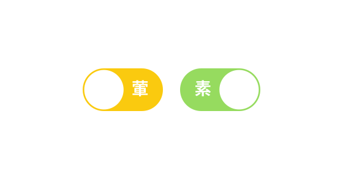

全新的美食地圖功能，讓你收藏最愛的餐廳，並與他人分享，或是替自己做一回最私房的美食巡禮！
影片簡介
產品特色
標籤
發現了一家十分喜歡的餐廳？那就趕緊把它加進自己的地圖裡面吧！建立各式各樣的地圖標籤，甚至可以編輯顏色，讓你更快速的在地圖上辨識出來各種標籤種類，建立起多采多姿的口袋名單！
若想將自己的地圖標籤發揚光大，還可分享給他人，實時的更新標籤，分享不中斷，成為他人口中的老饕吧！
轉盤
不知道要吃什麼？那就使用轉盤幫你選！
此功能也提供無法下決定的你一個痛快，讓手機幫你做選擇！從自己已建立的地圖標籤裡面挑選出想吃的餐廳，若對結果不滿意，那就再來一次！
多樣化的選擇
除了從地圖標籤裡選擇想吃的食物，也可以從自定義標籤裡面設定條件，篩選出符合您需求的餐廳，不僅顧及您的喜好，也顧及您的時間與金錢！
若你想要品嘗新東西，可以試試看「熱門標籤」，讓了無新趣的日子多上一分新鮮與冒險！
人們都在用的熱門標籤
你說你也不想自己選？那就試試專為你這種大懶蟲發明的功能：熱門標籤，讓他幫你選！
每周更新的熱們標籤，讓你除了在猶豫、迷惘與飢餓之際助你一臂之力，還能帶你看看究竟大家都在吃什麼！
素葷一秒切換
還在煩惱難以找到合適的素食餐廳嗎？只要一按，所有的相關設定皆會變為素食的設定連主題色都會轉換成相對應的顏色！
